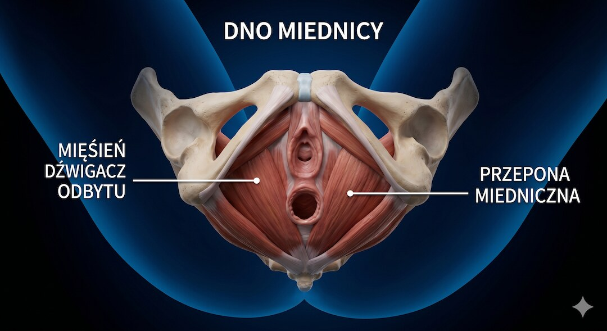
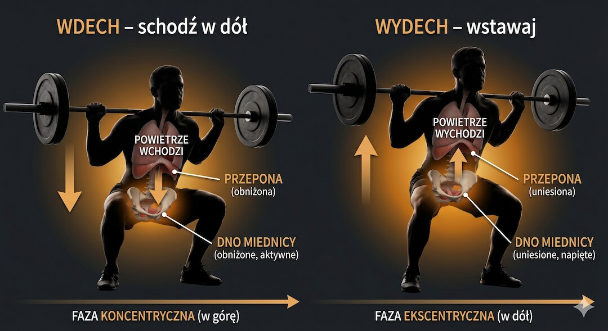
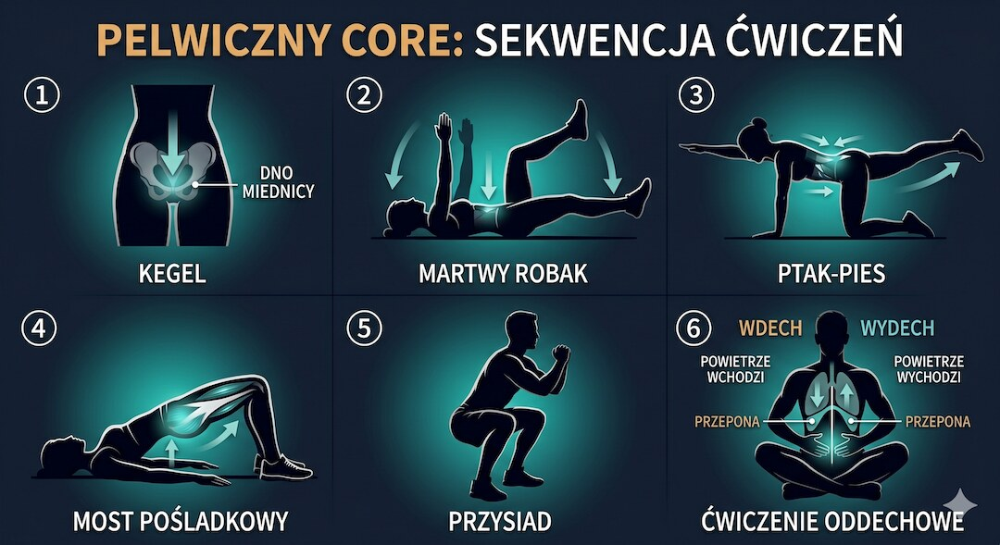
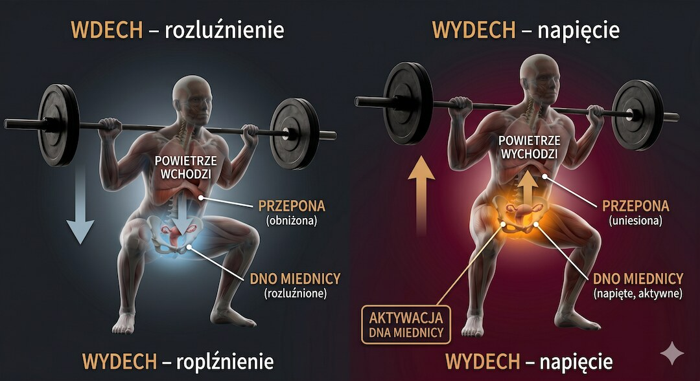
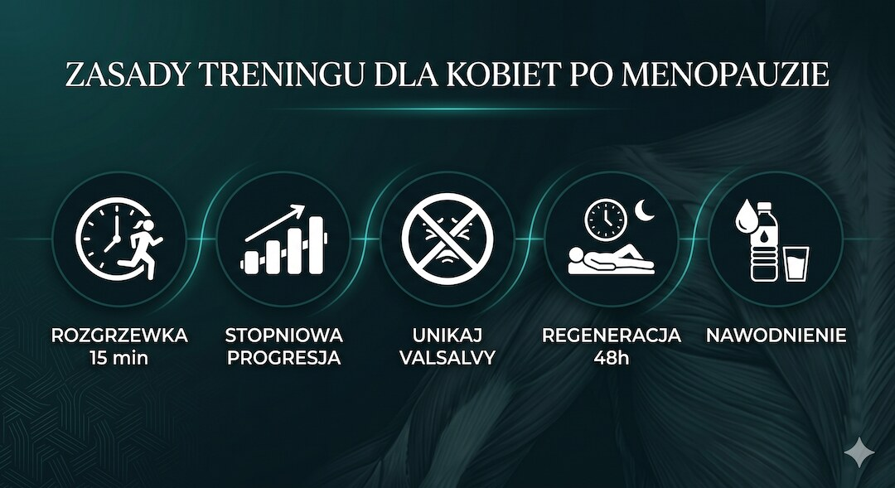
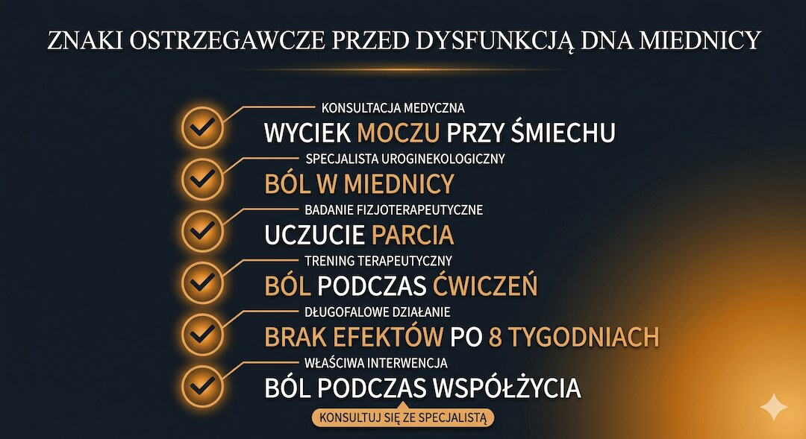
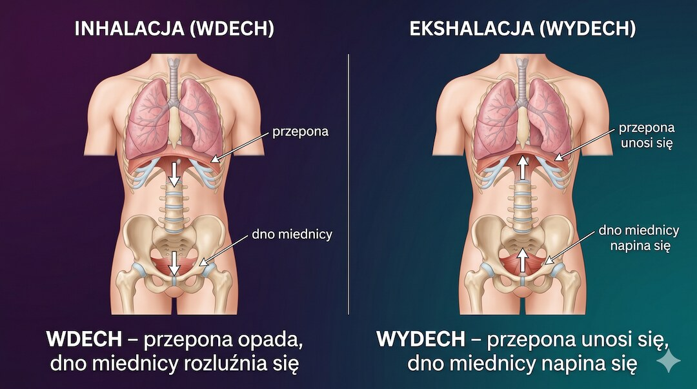

Mięśnie dna miednicy podtrzymują narządy i uczestniczą w kontroli moczu, stolca oraz ciśnienia podczas ruchu. Po menopauzie na objawy wpływają zmiany tkanek, ale także porody, operacje, kaszel, zaparcia i sposób oddychania przy wysiłku. Ten poradnik pokazuje, kiedy ćwiczyć samodzielnie, a kiedy potrzebna jest indywidualna ocena.
Szybka odpowiedź
U osób po 50-tce z wysiłkowym lub mieszanym nietrzymaniem moczu pierwszym wyborem jest nadzorowany trening mięśni dna miednicy prowadzony przez co najmniej 3 miesiące. Ćwiczenie wymaga zarówno napięcia, jak i pełnego rozluźnienia; samo zaciskanie podczas każdego ruchu nie jest uniwersalną metodą. Ból, uczucie ciężaru, wyciek moczu albo trudność z rozpoznaniem skurczu są wskazaniem do fizjoterapii uroginekologicznej.
Kluczowe wnioski
- Po menopauzie zmiany tkanek mogą wpływać na objawy, ale nie są ich jedyną przyczyną.
- Swobodny oddech i unikanie długiego parcia pomagają kontrolować ciśnienie, ale nie są uniwersalnym leczeniem.
- Przysiady i ćwiczenia core mogą być dodatkiem; przy objawach podstawą jest oceniony trening napięcia i rozluźnienia.
- NICE zaleca nadzorowany trening mięśni dna miednicy przez co najmniej trzy miesiące przy wysiłkowym lub mieszanym nietrzymaniu moczu.
Dlaczego mięśnie dna miednicy słabną po 50-tce i po menopauzie?
Mięśnie dna miednicy tworzą rodzaj mięśniowo-powięziowego hamaka rozpiętego między kością łonową a kością ogonową. Utrzymują pęcherz, macicę i jelito grube na właściwych miejscach, kontrolują oddawanie moczu i stolca, a w trakcie ruchu współpracują z przeponą i mięśniami głębokimi brzucha, tworząc coś, co fizjoterapeuci nazywają „cylindrem stabilizującym”. Kiedy ten system zaczyna zawodzić, odczuwamy to bardzo konkretnie.
Po pięćdziesiątce zmiany hormonalne mogą wpływać na tkanki układu moczowo-płciowego, lecz objawy nie wynikają tylko z menopauzy ani z „zaniedbania”. Znaczenie mają także porody, operacje, przewlekły kaszel, zaparcia, masa ciała, choroby neurologiczne oraz zarówno osłabienie, jak i nadmierne napięcie mięśni.
Wyciek przy kaszlu, nagłe parcie, uczucie ciężaru, ból lub objawy obniżenia narządów są częste, ale nie są obowiązkową częścią starzenia. Sam ból dolnego odcinka pleców nie rozpoznaje dysfunkcji dna miednicy. Właściwe badanie pozwala rozróżnić problem z siłą od problemu z rozluźnieniem lub koordynacją.

Trening oporowy a ciśnienie śródbrzuszne – jak bezpiecznie dźwigać po 50-tce?
Podniesienie ciężaru — sztangi, zakupów czy wnuka — powoduje chwilowy wzrost ciśnienia wewnątrzbrzusznego (IAP). To naturalne. Nie można jednak założyć, że ciśnienie zawsze kieruje się „w dół”; znaczenie mają wielkość obciążenia, oddech, koordynacja i objawy danej osoby.
Przepona, brzuch i dno miednicy współpracują przy zmianach ciśnienia, ale ich wzorzec zależy od zadania i osoby. Długie parcie z zamkniętą głośnią może mocno zwiększać ciśnienie. Przy treningu rekreacyjnym, szczególnie z objawami, rozsądnym początkiem jest mniejszy ciężar i swobodny wydech w trudniejszej fazie.
Wydech podczas wstawania lub podnoszenia jest praktyczną wskazówką, a nie gwarancją, że ćwiczenie nie obciąży dna miednicy. Obserwuj wyciek, uczucie ciężaru i ból. Jeśli się pojawiają, zmniejsz obciążenie, zakres lub liczbę powtórzeń i omów technikę ze specjalistą. Poza treningiem nie zaciskaj mięśni przez cały dzień; lepiej regularnie zmieniać pozycję i przerywać długie siedzenie.

Kegel to nie wszystko – jakie są najlepsze ćwiczenia na wzmocnienie głębokiego core?
Trening mięśni dna miednicy nie polega na ciągłym zaciskaniu. Najpierw trzeba potwierdzić prawidłowy skurcz i pełne rozluźnienie, bo przy nadmiernym napięciu dokładanie kolejnych „Kegli” może nasilać ból lub trudności z oddawaniem moczu. Ćwiczenia core są możliwym dodatkiem, a nie obowiązkowym elementem każdego programu.
Poniższe ćwiczenia mogą być elementem planu, jeśli nie nasilają objawów i są dopasowane do rozpoznania:
- Skurcz i pełne rozluźnienie – dawkę, czas napięcia i pozycję dobierz po sprawdzeniu techniki; uniwersalne 3 × 10 nie pasuje do każdej dysfunkcji.
- Dead bug (martwy robak) – naprzemienny wyprost ręki i nogi w zakresie pozwalającym zachować kontrolę tułowia i swobodny oddech.
- Bird dog – naprzemienny wyprost ręki i nogi bez skręcania tułowia; przy bólu zakres trzeba zmniejszyć lub wybrać inne ćwiczenie.
- Mostek – wzmacnia głównie pośladki; wydech podczas unoszenia może ułatwić kontrolę ciśnienia.
- Przysiad do krzesła – ćwiczy nogi i codzienne wstawanie; nie zastępuje swoistego treningu dna miednicy przy nietrzymaniu moczu.
- Spokojny oddech – pomaga zauważyć napięcie i rozluźnienie, ale sam nie leczy każdej dysfunkcji dna miednicy.

Czy przysiady wzmacniają dno miednicy?
Przysiad może angażować mięśnie dna miednicy, ale obecność aktywności w badaniu EMG nie dowodzi, że ćwiczenie zwiększy ich siłę lub wyleczy nietrzymanie moczu. Traktuj go jako ruch całego ciała. Przy wycieku, ciężarze lub bólu zmniejsz obciążenie i sprawdź technikę oraz zdolność rozluźnienia.
Większy ciężar i parcie zwiększają ciśnienie śródbrzuszne, ale nie można powiedzieć, że całe ciśnienie zawsze „idzie w dół”. Reakcję ocenia się po objawach i kontroli ruchu. Wydech może pomóc, lecz prawidłowy oddech nie zmienia przysiadu w terapię każdej dysfunkcji.
Przysiad wzmacnia nogi i pośladki oraz pomaga w codziennym wstawaniu. To wartościowy cel sam w sobie. Funkcja pośladków może wspierać kontrolę miednicy, ale ich siła nie przesądza o prawidłowym napięciu dna miednicy.

Trening po menopauzie – co zmienia się w praktyce i jak to uwzględnić?
Menopauza sama w sobie nie wyklucza treningu siłowego. Plan trzeba dopasować do aktualnej sprawności, chorób, objawów urogenitalnych i tolerancji wysiłku, a nie do samego wieku. Nie ma jednej obowiązkowej długości rozgrzewki ani listy ćwiczeń zakazanych wszystkim kobietom po menopauzie.
W praktyce zwiększaj obciążenie dopiero wtedy, gdy ruch nie wywołuje wycieku, ciężaru ani bólu. Skoki i duże ciężary mogą być możliwe po przygotowaniu, lecz przy objawach zacznij od łatwiejszego wariantu. Przerwy między sesjami dobierz do regeneracji; odwodnienie nie jest rozpoznaniem dysfunkcji dna miednicy.

Kiedy zgłosić się do fizjoterapeuty uroginekologicznego?
Fizjoterapeuta zajmujący się dnem miednicy ocenia m.in. zdolność napięcia i rozluźnienia, oddech, objawy oraz reakcję na obciążenie. Na tej podstawie dobiera ćwiczenia; samodzielne Kegle nie pasują do każdej dysfunkcji.
Kiedy warto umówić się na wizytę? Zwróć uwagę na następujące objawy:
- Wysiłkowe lub nagłe nietrzymanie moczu — choćby „tylko przy śmiechu”
- Ból w okolicy miednicy, dolnego brzucha lub krocza podczas ćwiczeń lub po nich
- Uczucie parcia, ciężkości lub obecności czegoś w pochwie
- Problemy z oddawaniem stolca — zaparcia lub mimowolne wycieki
- Ból podczas współżycia
- Brak poprawy mimo regularnego, prawidłowo wykonywanego programu
Przed wizytą sprawdź prawo wykonywania zawodu fizjoterapeuty oraz doświadczenie w terapii dna miednicy. Zapytaj, jak wygląda badanie, jakie są możliwe opcje i czy na każdy etap wyrażasz osobną zgodę.

Jak przepona wpływa na dno miednicy?
Przepona, ściana brzucha i dno miednicy współpracują przy oddychaniu i zmianach ciśnienia. U wielu osób przy spokojnym wdechu dno miednicy lekko się obniża, a przy wydechu wraca, lecz zakres i kierunek nie są identyczne w każdym zadaniu ani przy każdej dysfunkcji.
Ćwiczenie spokojnego oddechu może pomóc zauważyć napięcie i rozluźnienie. Brzuch oraz dolne żebra powinny poruszać się bez wymuszania ogromnego wdechu; klatka piersiowa nie musi pozostawać nieruchoma. Sam „oddech przeponowy” nie wzmacnia automatycznie słabych mięśni i nie rozluźnia automatycznie nadmiernie napiętych.

Zobacz też:bezpieczny start na siłowni, trening siłowy po 50-tce.
Najczęściej zadawane pytania
Dlaczego mięśnie dna miednicy słabną po menopauzie?
Zmiany hormonalne po menopauzie mogą wpływać na tkanki układu moczowo-płciowego, ale objawy nie wynikają wyłącznie z wieku lub „zaniedbania”. Znaczenie mają też porody, operacje, kaszel, zaparcia, masa ciała, choroby neurologiczne oraz zbyt wysokie albo zbyt niskie napięcie mięśni.
Czy przysiady wzmacniają dno miednicy?
Przysiad może angażować mięśnie dna miednicy, ale sama aktywacja w badaniu EMG nie dowodzi, że wyleczy nietrzymanie moczu. Jeśli ruch nasila wyciek, ciężar lub ból, zmniejsz obciążenie i skonsultuj technikę; przy objawach podstawą jest oceniony trening napięcia i rozluźnienia.
Jak ćwiczyć dno miednicy po menopauzie?
Przy wysiłkowym lub mieszanym nietrzymaniu moczu NICE zaleca nadzorowany trening mięśni dna miednicy przez co najmniej trzy miesiące. Program obejmuje ocenę prawidłowego skurczu, pełne rozluźnienie oraz dawkę dopasowaną do objawów; ćwiczenia core mogą być dodatkiem, nie obowiązkowym zamiennikiem.
Kiedy należy iść do fizjoterapeuty uroginekologicznego?
Warto zgłosić się przy wycieku moczu, uczuciu obniżania lub ciężaru, bólu, trudnościach z oddawaniem moczu albo stolca oraz gdy nie potrafisz rozpoznać skurczu i rozluźnienia. Krwawienie, nagły silny ból, zatrzymanie moczu lub nowy objaw neurologiczny wymagają pilnej oceny lekarskiej.
Czy trening siłowy szkodzi dnu miednicy po 50-tce?
Nie musi szkodzić, ale reakcja zależy od obciążenia, oddechu i istniejących objawów. Jeśli podczas serii pojawia się wyciek, uczucie ciężaru lub ból, zmniejsz ciężar lub zakres i skonsultuj plan. Wydech w trudniejszej fazie jest wskazówką, nie uniwersalną terapią.
Jak przepona wpływa na dno miednicy?
Przepona, ściana brzucha i dno miednicy współpracują przy zmianach ciśnienia, ale wzorzec nie jest identyczny u każdej osoby. Spokojny oddech pomaga ćwiczyć rozluźnienie i koordynację; nie zastępuje oceny, gdy występuje ból, wyciek lub nadmierne napięcie.
Plan startowy, ćwiczenia, progresję i zasady bezpieczeństwa znajdziesz w Centrum Treningu Siłowego po 50-tce.
Źródła
- NICE NG210 — zalecenia dotyczące treningu mięśni dna miednicy przy nietrzymaniu moczu
- Effect of pelvic floor muscle training on urinary incontinence in postmenopausal women (EJOG, 2024)
- Training Interventions in Postmenopausal Women to Improve PFM Function – PMC Systematic Review (2025)
- Breathing, (S)Training and the Pelvic Floor – A Basic Concept (PMC, 2022)
- Effect of diaphragm and abdominal muscle training on pelvic floor strength – PMC RCT
- Intra-abdominal pressure and pelvic floor health – PMC (2022)
- Effects of PFMT on sexual function in postmenopausal women – meta-analysis (PMC, 2025)
- Pelvic floor muscle training – QoL in postmenopausal women with genitourinary syndrome (PubMed, 2024)
- The effects of breath control on intra-abdominal pressure during lifting tasks (PubMed, 2004)
Uwaga: Artykuł ma charakter informacyjny i edukacyjny. Nie zastępuje konsultacji lekarskiej, diagnozy ani leczenia.